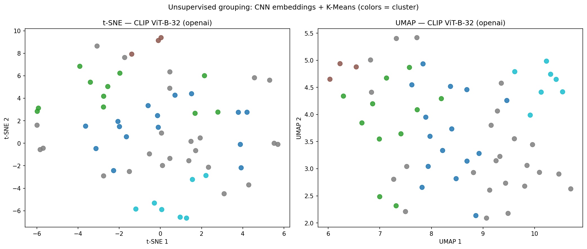
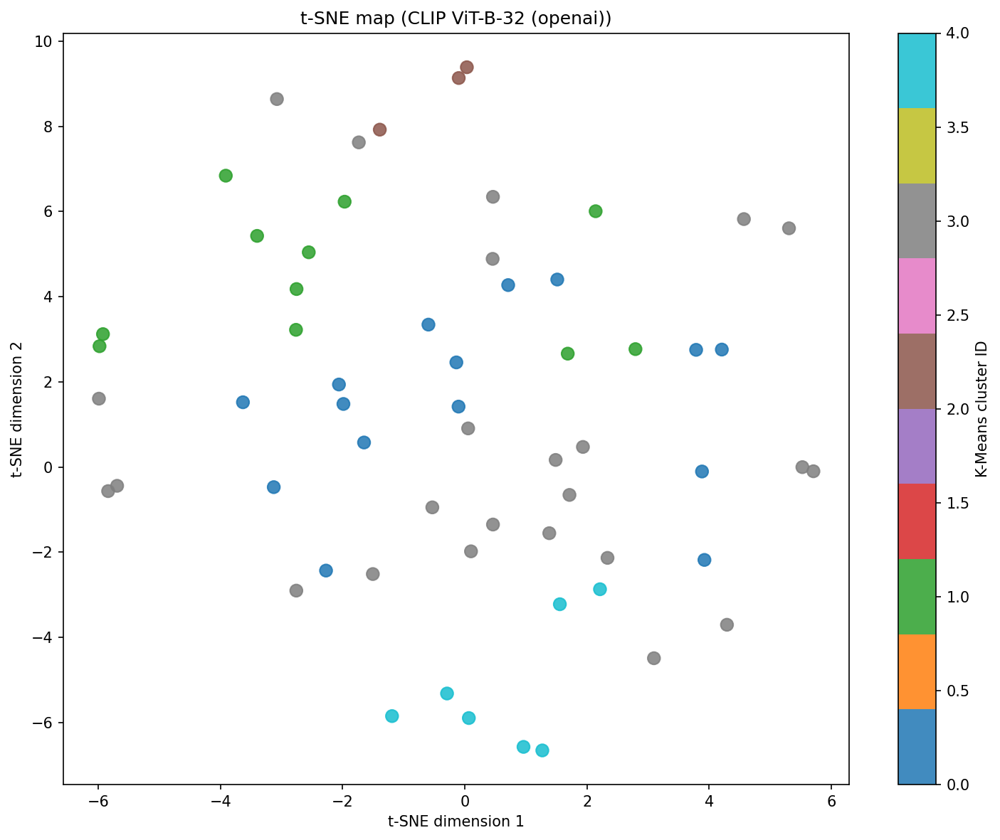
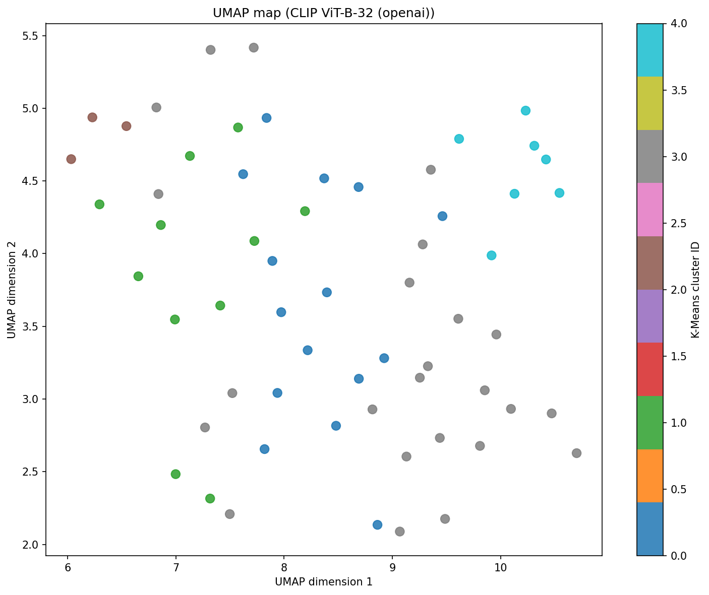

60 original photos from issue_eval/images only.
No manual sorting — pure math.
Backbone: CLIP ViT-B-32 (openai) · Vector size: 512 numbers per image · K = 5 clusters · Silhouette: 0.024



Auto-selected k=5 for clearer groups (best silhouette was only 0.043 at k=3).
In plain English: People appear often here. Crowds, partial bodies, and overlap make it hard to draw a clean outline around each person.
Common COCO objects in this group: person (16), teddy bear (7), snowboard (6), dog (5), bench (5), umbrella (3)
Avg labeled objects per image: 4.7
000000000042.jpg000000000061.jpg000000000074.jpg000000000127.jpg000000000201.jpg000000000208.jpg000000000250.jpg000000000309.jpg000000000328.jpg000000000359.jpg000000000474.jpg000000000490.jpg000000000491.jpg000000000508.jpg000000000581.jpgIn plain English: These photos have many things in one frame. The model tends to catch the big, obvious objects and miss smaller or overlapping ones — like a busy street or a table full of items.
Common COCO objects in this group: person (69), umbrella (13), traffic light (9), chair (9), bird (8), car (7)
Avg labeled objects per image: 14.1
000000000049.jpg000000000077.jpg000000000109.jpg000000000149.jpg000000000257.jpg000000000315.jpg000000000360.jpg000000000419.jpg000000000472.jpg000000000520.jpg000000000531.jpgIn plain English: These photos have many things in one frame. The model tends to catch the big, obvious objects and miss smaller or overlapping ones — like a busy street or a table full of items.
Common COCO objects in this group: car (19), person (12), airplane (4), truck (3), handbag (3), bus (2)
Avg labeled objects per image: 15.0
000000000247.jpg000000000540.jpg000000000542.jpgIn plain English: In this group the model regularly skips whole types of objects. Training needs more examples of these scenes and those missing categories.
Common COCO objects in this group: person (84), book (24), cup (22), chair (19), car (14), teddy bear (14)
Avg labeled objects per image: 11.7
000000000071.jpg000000000113.jpg000000000133.jpg000000000136.jpg000000000164.jpg000000000241.jpg000000000260.jpg000000000308.jpg000000000357.jpg000000000384.jpg000000000389.jpg000000000395.jpg000000000446.jpg000000000514.jpg000000000536.jpg000000000544.jpg000000000560.jpg000000000564.jpg000000000590.jpg000000000612.jpg000000000623.jpg000000000641.jpg000000000643.jpgsample.jpgIn plain English: These photos have many things in one frame. The model tends to catch the big, obvious objects and miss smaller or overlapping ones — like a busy street or a table full of items.
Common COCO objects in this group: carrot (22), spoon (20), bowl (18), person (12), broccoli (10), knife (8)
Avg labeled objects per image: 17.6
000000000009.jpg000000000110.jpg000000000196.jpg000000000294.jpg000000000397.jpg000000000486.jpg000000000584.jpg| ID | COCO class | Labeled instances | Share |
|---|---|---|---|
| 0 | person | 193 | 28.6% |
| 2 | car | 42 | 6.2% |
| 56 | chair | 33 | 4.9% |
| 41 | cup | 29 | 4.3% |
| 45 | bowl | 26 | 3.9% |
| 73 | book | 26 | 3.9% |
| 51 | carrot | 22 | 3.3% |
| 44 | spoon | 21 | 3.1% |
| 77 | teddy bear | 21 | 3.1% |
| 25 | umbrella | 17 | 2.5% |
| 39 | bottle | 16 | 2.4% |
| 26 | handbag | 15 | 2.2% |
| Class | GT instances | Images affected |
|---|---|---|
| fork | 4 | 4 |
| orange | 4 | 1 |
| mouse | 2 | 2 |
| elephant | 2 | 1 |
| toothbrush | 2 | 1 |
| toilet | 1 | 1 |
| laptop | 1 | 1 |
| Image | Visual group | What goes wrong |
|---|---|---|
| 000000000042.jpg | 0 | The model often misses entire categories here (e.g. dog). Labeled 1 objects vs 3 detected.... |
| 000000000061.jpg | 0 | The model often misses entire categories here (e.g. elephant). Labeled 5 objects vs 3 detected.... |
| 000000000074.jpg | 0 | Some objects were found (6 of 8), but masks may still be wrong shape or class. This image is in the hard set because ove... |
| 000000000127.jpg | 0 | The model often misses entire categories here (e.g. person, umbrella, handbag, potted plant…). Labeled 17 objects vs 10 ... |
| 000000000201.jpg | 0 | Some objects were found (10 of 8), but masks may still be wrong shape or class. This image is in the hard set because ov... |
| 000000000208.jpg | 0 | The model often misses entire categories here (e.g. toothbrush). Labeled 4 objects vs 2 detected.... |
| 000000000250.jpg | 0 | No labeled objects to compare — the model did not produce usable masks for scoring.... |
| 000000000309.jpg | 0 | The model often misses entire categories here (e.g. teddy bear). Labeled 4 objects vs 3 detected.... |
| 000000000328.jpg | 0 | The scene is crowded (11 objects labeled). The model only found about 3, so many things were missed — often smaller item... |
| 000000000359.jpg | 0 | Some objects were found (2 of 4), but masks may still be wrong shape or class. This image is in the hard set because ove... |
| 000000000474.jpg | 0 | Some objects were found (2 of 2), but masks may still be wrong shape or class. This image is in the hard set because ove... |
| 000000000490.jpg | 0 | Some objects were found (2 of 2), but masks may still be wrong shape or class. This image is in the hard set because ove... |
| 000000000491.jpg | 0 | The model often misses entire categories here (e.g. teddy bear). Labeled 4 objects vs 2 detected.... |
| 000000000508.jpg | 0 | No labeled objects to compare — the model did not produce usable masks for scoring.... |
| 000000000581.jpg | 0 | Some objects were found (3 of 1), but masks may still be wrong shape or class. This image is in the hard set because ove... |
| 000000000049.jpg | 1 | The model often misses entire categories here (e.g. potted plant). Labeled 9 objects vs 9 detected.... |
| 000000000077.jpg | 1 | The model often misses entire categories here (e.g. skateboard). Labeled 8 objects vs 4 detected.... |
| 000000000109.jpg | 1 | The model often misses entire categories here (e.g. dog). Labeled 8 objects vs 7 detected.... |
| 000000000149.jpg | 1 | The scene is crowded (22 objects labeled). The model only found about 6, so many things were missed — often smaller item... |
| 000000000257.jpg | 1 | The model often misses entire categories here (e.g. handbag). Labeled 33 objects vs 22 detected.... |
| 000000000315.jpg | 1 | The scene is crowded (38 objects labeled). The model only found about 13, so many things were missed — often smaller ite... |
| 000000000360.jpg | 1 | The model often misses entire categories here (e.g. snowboard). Labeled 3 objects vs 3 detected.... |
| 000000000419.jpg | 1 | The scene is crowded (7 objects labeled). The model only found about 3, so many things were missed — often smaller items... |
| 000000000472.jpg | 1 | Some objects were found (1 of 1), but masks may still be wrong shape or class. This image is in the hard set because ove... |
| 000000000520.jpg | 1 | The model often misses entire categories here (e.g. person). Labeled 11 objects vs 6 detected.... |